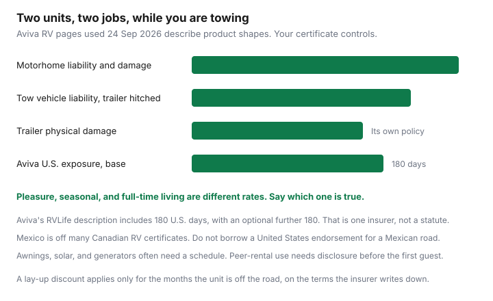

Insurance · Canada
RV and Travel Trailer Insurance in Canada: Full-Timer, Seasonal, and Towing Scenarios
An RV is either a vehicle you drive or a trailer you tow, and sometimes a place you sleep for months. Households add the unit to the driveway and leave liability, contents, and the months it sits in storage for the renewal that never asks. This page is the Canadian product split: motorhome versus towable, pleasure versus full-time, gear that needs a schedule, United States day caps, Mexico, lay-up, and peer rental. What a provincial health plan pays in a U.S. hospital is the travel-medical guide. The RV policy does not replace it.
Disclosure: Broker quote portals are an offer type for a motorhome or trailer policy. Saving Optimizer may earn a commission if those links are added later. We do not claim a partnership with any brokerage, insurer, or rental platform. Aviva figures below are from Aviva’s own pages, used 24 Sep 2026. Your certificate controls. Education only.
Key takeaways
- A motorhome needs its own liability and physical damage. A trailer usually needs its own physical-damage policy, while liability while it is hitched often follows the tow vehicle. Confirm both sentences in writing.
- Pleasure, seasonal, and full-time living are different rates. A policy priced for summer weekends can refuse a unit that is your only home.
- Awnings, solar, generators, and aftermarket gear often sit under a sublimit until you schedule them.
- Aviva’s RVLife description includes 180 days in the continental United States, with an option to add 180 more. Mexico is not that endorsement.
- A storage or lay-up discount applies only while the unit stays off the road on the terms the insurer wrote down.
- Renting the unit on a peer platform is a commercial use. Disclose it before the first guest.
Motorhome vs towable trailer: separate policies and liability while towing
Match the contract to the thing that moves.
- Motorhome. It is a vehicle. Aviva’s RV page separates a motorhome written on an automobile policy from a motorhome written on a property policy, for Class A, B, and C units. Liability, collision, and comprehensive belong on whichever of those forms you were sold. A car policy on the commuter sedan does not become the motorhome’s liability because both sit in your name.
- Travel trailer, fifth wheel, tent trailer, toy hauler. Aviva lists these as towed trailers on a property-style policy. While the trailer is attached and you are towing, liability for harm the combination does to other people often follows the tow vehicle’s auto liability. That sentence is common. It is not a reason to skip reading the auto policy’s trailer wording. Physical damage to the trailer itself, theft of the trailer in a campground, and a loss while it is unhitched are why the trailer has its own policy.
- Park model or a trailer that does not move. Aviva lists a stationary trailer separately. A unit that never returns to the highway is closer to a cottage than to a tow. Insure it as the stationary thing it is.
Before a trip, write down three answers from the documents, not from the seller: the liability limit on the motorhome or on the tow vehicle while a trailer is attached; the deductible and the insured value of the coach or trailer; and whether the lender is named if you financed it. A bill of sale is not a certificate.

Use classes: pleasure, seasonal, full-time living—each rates differently
Insurers rate the months you roll and whether the unit is a hobby or a home.
| Use | What you tell the insurer |
|---|---|
| Pleasure | Weekends and a few trips a year. The unit is not where you receive mail as your only home. A pleasure rate on a unit you occupy ten months a year is the wrong fact. |
| Seasonal | On the road for a season, then stored. Pair this with the lay-up section so the stored months are the months you declared. |
| Temporary home | Aviva has described an optional endorsement to use a towed trailer as a primary residence for a defined period, for example during a renovation, with additional living expenses in place of vacation expenses. Temporary is the word. It is not a permanent address. |
| Full-time | The unit is your residence. Aviva’s Quebec page describes a Nomade program for residents who live in the RV with no fixed address, including liability, personal property, and property in storage. Full-time placement in other provinces is a broker question, and some markets have stopped writing it. Ask before you sell the house. |
A full-timer who keeps a pleasure policy because it was cheaper at the dealer has a coverage argument waiting for the first total loss. Get the use in writing. There is no national full-timer premium to publish.
Contents, awnings, and aftermarket gear often need schedule or riders
The coach and the life inside it are different limits.
- Personal property. Aviva’s Quebec motorhome wording lists personal property in the RV as a coverage shape, with its own conditions. Clothing, dishes, and a laptop often sit on a contents sublimit, sometimes actual cash value. A home policy on a house you no longer occupy may not follow you down the highway. Ask which policy pays for contents, and for how much.
- Awnings, solar, generators, bike racks, satellite gear. Factory equipment may be inside the unit’s insured value. Aftermarket pieces often are not, until you schedule them for a stated amount. Photograph serial numbers the week you install them.
- Emergency expenses. Aviva’s RVLife blog, used 24 Sep 2026, describes emergency accommodation if the trailer is lost or damaged on a trip: a base limit of $2,000, with an option to raise it to $5,000. Quebec listings on Aviva’s page show emergency vacation expenses up to $3,000. Those are published examples from one company. Your form prints its own number. Roadside towing distance is also contractual. Do not assume a 15 kilometre tow and a 250 kilometre tow are the same product.
- Jewellery and electronics. The temporary-residence endorsement Aviva has described carries limited sublimits on jewellery and portable electronics. A schedule, or leaving those items off the trip, is the decision.
US travel and Mexico exclusions on Canadian RV policies
Canada and the continental United States are the trip most certificates are built for. The day count is the part snowbirds miss.
Aviva’s RV insurance page, used 24 Sep 2026, offers a U.S. exposure endorsement for travel in the continental United States up to 180 days, on motorhomes and on towed trailers. Aviva’s RVLife article says every RVLife policy includes 180 U.S. days, and that an avid traveller can add another 180 days. A Canadian Underwriter interview with Aviva’s lifestyle team described the same shape: about six months, then an extension of up to 180 further days, and no coverage beyond that while the unit is travelling in the United States unless the extension is on the policy. If your insurer is not Aviva, ask for your day count. Do not paste 180 onto another company’s form.
Mexico is the exclusion to read in daylight. A United States endorsement is not a Mexican policy. Many Canadian auto and RV forms stop at the U.S. border. If the certificate does not say Mexico, arrange a policy that does before you cross, and ask whether a loss in Mexico voids the Canadian repair wording even after you return. The snowbird guide is the medical and residency clock. Buy that cover for the people. Buy the RV endorsement for the unit. They are two bills.
Provincial health insurance pays a thin daily amount outside Canada. An RV policy’s emergency-accommodation limit is a hotel while the trailer is repaired. It is not surgery.
Storage and seasonal lay-up discounts
A unit that sits from October to April should not be rated as if it rolls every week, and a discount that requires it to sit cannot survive a January trip you forgot to declare.
- Ask what lay-up or storage credit this insurer files, for which months, and whether the unit must be at a named address.
- Ask which coverages stay on during lay-up. Theft, fire, and hail in a storage yard are the losses that still happen. A discount that removes comprehensive to save a small premium is a bad trade if you cannot replace the unit.
- Ask what notice you must give before you put it back on the road. A long weekend in March, inside a lay-up that was supposed to run until May, is a coverage argument.
- If you store it in another province or in the United States, say so. Garaging is a fact. A Manitoba or Saskatchewan plate rule for cars does not automatically govern a trailer stored in Arizona. The RV certificate does.
Put the lay-up start and end dates on the annual review sheet, beside the United States day count you have already used.
Rental-platform use (peer RV rentals) requires disclosure
Lending the unit to a paying stranger is a business use. A policy priced for your family holidays can exclude that use entirely.
Aviva’s RV pages say there is insurance protection for RV owners and renters on Outdoorsy, with a commercial policy during delivery and the rental period, and that the offering varies by province. That is Aviva’s description of a platform arrangement. It does not mean your existing pleasure policy allows the rental. Tell your insurer, in writing, the platform name, the province where the unit is plated or stored, and whether you will deliver it. If they decline, stop. A second market through a broker is the offer type for this page. It is not a reason to hide the listing.
During a rental, ask who pays the deductible, who insures the renter’s liability, and whether your own contents sublimit still applies to gear you left on board. After you stop listing, remove any commercial endorsement so you stop paying for a use you dropped. The same habit is on the rideshare guide for cars. The vehicle is different. The notice is the same.
Sources & date stamps
- Aviva Canada, RV, motorhome and trailer insurance — automobile versus property motorhome forms, towed and stationary trailers, U.S. exposure up to 180 days, Outdoorsy rental wording that varies by province. Page used 24 Sep 2026.
- Aviva Canada, RVLife article — emergency accommodation base $2,000 or $5,000 optional; 180 U.S. days included and a further 180 optional; temporary primary residence described as a defined period. Page used 24 Sep 2026.
- Aviva Canada, Quebec RV insurance — Nomade for full-time residents of Quebec; emergency vacation expenses up to $3,000 on the listings reviewed. Page used 24 Sep 2026.
- Another insurer’s day count, deductible, and full-time appetite can differ. The certificate is the contract. No national premium is stated.
Frequently asked questions
Does my car insurance cover the travel trailer I am towing?
Liability for an attached trailer often follows the tow vehicle, and you should confirm that sentence on the auto policy. Physical damage to the trailer is usually a separate policy. A motorhome is its own vehicle, with its own liability. Read both certificates before the first trip.
Are full-time RV living and a summer trip the same rate?
No. Pleasure, seasonal, and full-time living are different uses. Aviva describes a temporary-primary-residence option for a defined period, and a separate Quebec program for people who live in the unit with no fixed address. Tell the insurer which one is true. A forum’s premium is not your quote.
Does a Canadian RV policy cover the United States and Mexico?
Aviva’s RV pages, used 24 Sep 2026, describe continental United States exposure of 180 days on RVLife, with an optional further 180 days. That is one insurer’s endorsement, not a statute. Mexico is absent from that United States wording. Do not drive into Mexico on a certificate that does not say Mexico.
Can I rent my RV to other people on a platform?
Only if you disclose it. A personal RV policy is priced for your use. Aviva’s site describes a commercial policy for Outdoorsy owners and renters during a rental period, and says terms vary by province. The platform’s policy is not a substitute for telling your own insurer.
Is this brokerage advice?
No. Education only. Broker quote portals are an offer type for a motorhome or trailer quote. We do not claim a partnership with any brokerage, with Aviva, or with a rental platform.